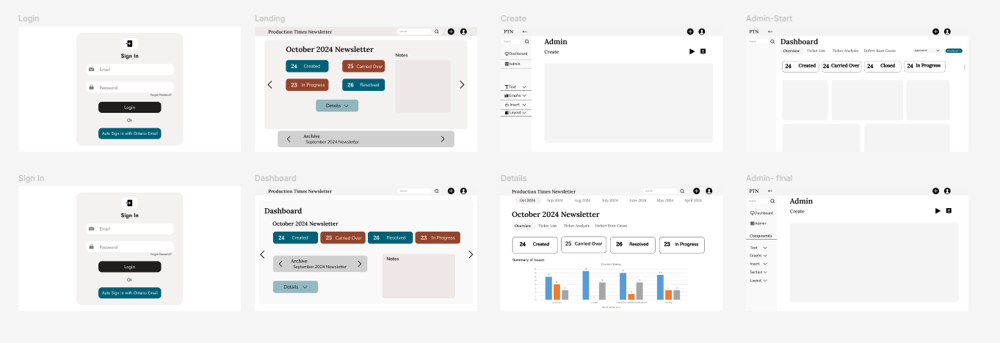
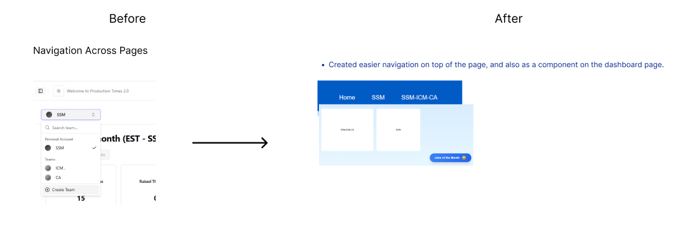
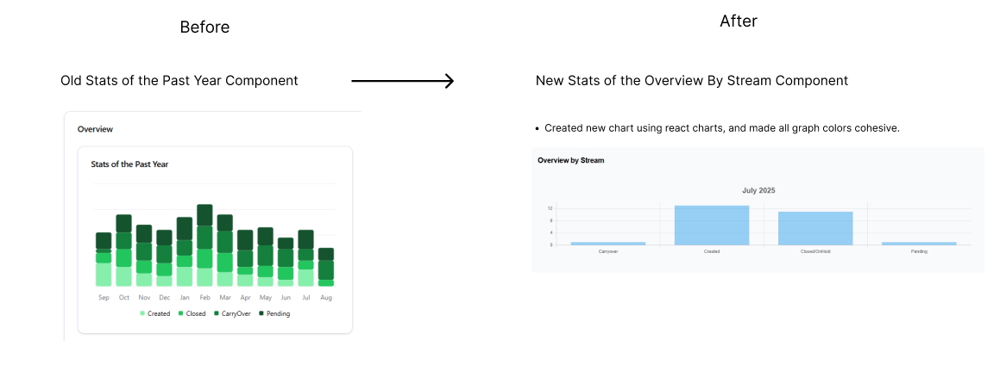
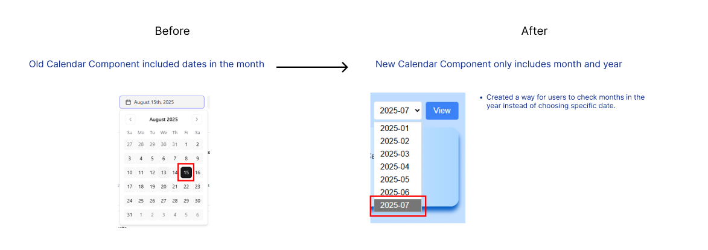

Internship / Production Times Ticket Newsletter
Demoed
Production Times is an internal ticket processing system for the Ontario Public Service in the Digital Solutions Branch. It analyzes tickets created by developers for the three major data streams.
UI/UX Designer & Frontend Developer
Figma, Figjam, React, React-charts, Excel, PowerPoint
Jan 2025 - August 2025
4 Students
PROBLEM
Employees struggled to track ticketing metrics across three systems, leading to delays and miscommunication
The manual ticket processing system had a few problems:
- 7-8 Excel files used manually to track tickets.
- 20+ hours/month spent analyzing ticket data.
- 5+ hours/month spent formatting PowerPoint newsletters.
- Manual creation of graphs and charts.
- 2-3 Days delays in retrieving missing ticket info from developers.
These issues made it difficult for leadership to evaluate team performances, and caused coop students to spend hours tracking down missing details, which sometimes delayed newsletter releases.
7+ Excel Files
used to manually compile ticket data before
20 Hours/Month
spent manually analyzing ticket data
3 major ticket streams
Unified into one dashboard
DESIGN PROCESS
We began the design sprint with minimal requirements, to encourage all of us, 4 designers, to interpret the problem creatively. I proposed designing a flexible newsletter application, that allows users to preview templates or start a new newsletter application from scratch. I emphasized a “past newsletters” browsing experience so that users could also access any missed information from past newsletters. I prioritized accessibility to past newsletters, making it easy for users to revisit previous reports and avoid redundant work.
Browse Past Templates from initial design sprint
I wanted the user to be able to preview the newsletter from the app, and to be able to either start a new newsletter from scratch or use the template.


After our initial design sprint, all the interns met to review each other’s work with our supervisor. We discussed the pros and cons of each design, identifying overlaps and gaps. Some of these ideas were kept, and others were iterated on or dropped based on user clarity. Once we aligned on a shared direction, we refined the design into one final design, based on all the intern work.
DEVELOPER FEEDBACK
Based on this, I restructured the layout and mimicked the old PowerPoint format.
We presented our prototypes to senior developers. They suggested:
- One key feedback was the need to prioritize critical graphs, which were buried down at the bottom of the dashboard. Defect Root Cause higher on the dashboard
- I also created individual pages for SSM and another page for all the three streams which was reflective to the old PowerPoint that was sent out.
Here’s how my wire frame evolved during this process.
Final Wireframe Breakdown.
ITERATIONS
We demoed the app 3 times and refined based on feedback. Major changes included:
-



SHIPPED
Design
- Redesigned entire app with modern blue palette
- Created "Stats of the Month" and "Joke of the Month" components
- Used React Charts for responsive graphs
FINAL DESIGNS


LEARNINGS & REFLECTIONS
From this project, my biggest takeaways was realizing how crucial documentation is during hand offs.
- There were many intern hand offs as the terms ended, and the lack of clear process notes and component guidelines made it difficult to iterate confidently.
- This experience taught me the value of design systems and onboarding materials. I also learned how the design process can change massively depending on the users.